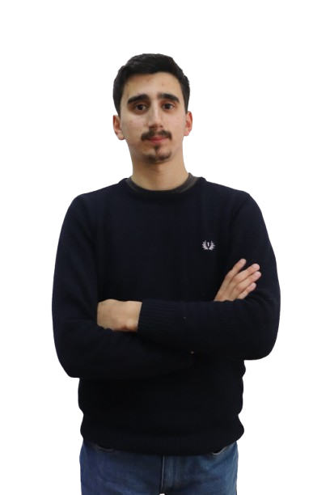
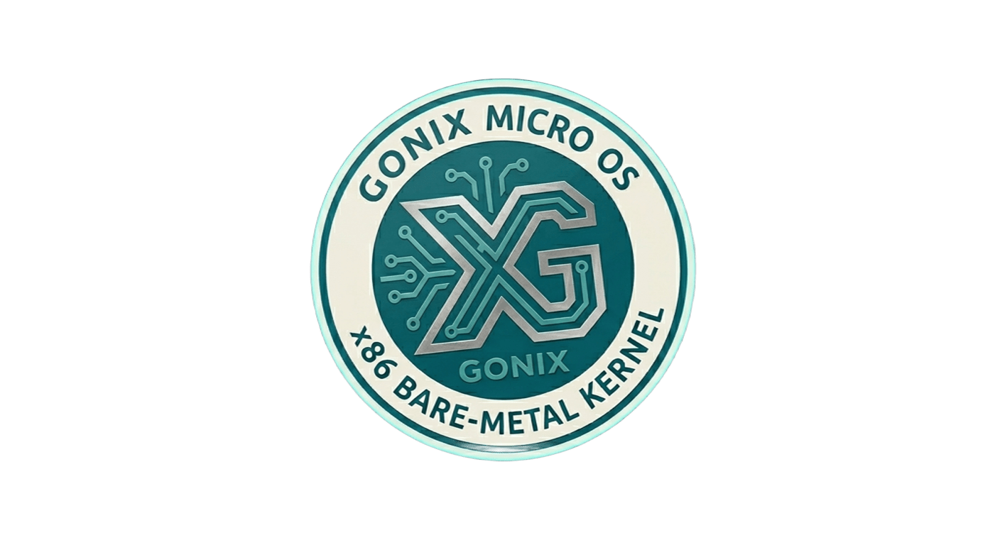
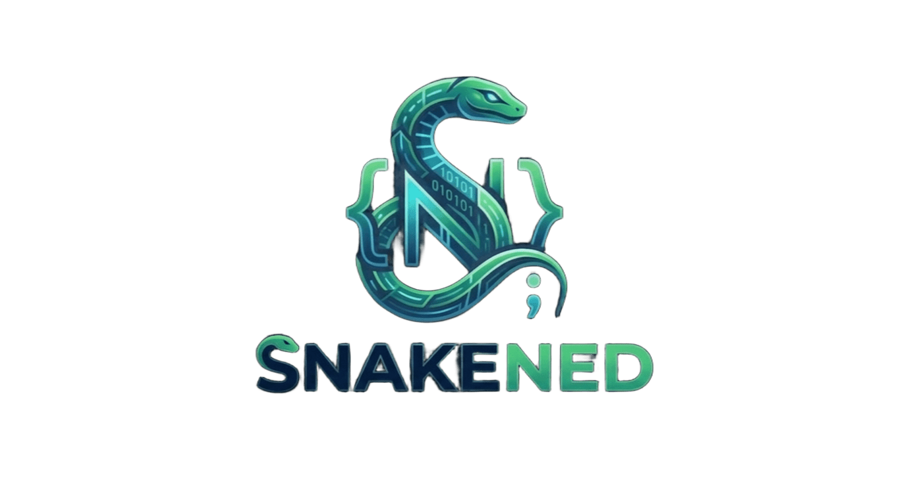

João Gonçalves
Formado em programação, focado em sistemas de baixo nível. Atualmente a desenvolver o Gonix OS e a linguagem Snakened.
Ver CV (PDF)
Projetos em Destaque
Satdist : Sensor de distância de satélites
Simulador MATLAB para cálculo de distância entre satélites e estações terrestres com modelagem de ruído.
Ver Sensor
OrbitalSat: Simulador de Satélite Virtual
Simulador dinâmico de órbitas terrestres em MATLAB com renderização 3D.
Explorar Simulador
